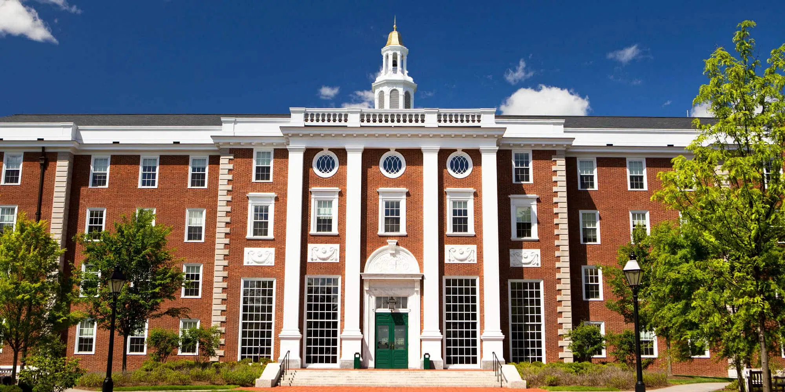

Located in Milwaukee, Wisconsin, Paroxy University is a Catholic college that has provided a well-rounded liberal arts education for more than 130 years. With about 2,000 undergraduate and graduate students, this small college has developed a powerful website that effectively showcases its academics as well as its tight-knit campus community.
Here are just a few of the most notable features on this college website:
-
Colorful button CTAs: On their homepage, visitors are met with a handful of colorful buttons that encourage them to explore undergraduate programs, graduate programs, transfer instructions, financial aid details, and virtual tours. Plus, a prominent “Apply Now” button takes prospective students directly to details on how to initiate their application. These buttons help students know exactly what actions to take to address their needs.
-
Well-organized navigation: The navigation bar on this site makes it easy for users to find the information they need.
-
It’s divided into four primary groups: Academics, Apply & Afford, Campus, and Current Students. When you scroll over each, you’re met with several page recommendations relevant to each category.
-
Awards and statistics: Paroxy University positions itself as a well-respected institution by displaying insightful statistics (like “100% internship and clinical placement rate’’ and “93% of undergraduate students receive financial aid”) right on its homepage.
Alverno College’s development team brought its vision to life with Morweb's CMS solution. Schools like this one rely on Morweb’s simple (yet powerful) website builder to expand their online presence and connect with more students.
-
Involvement information: This stunning college website uses its homepage to feature four primary involvement opportunities. Each has a button CTA to drive action, whether it’s learning more about campus life, exploring academic programs, reading about the presidential search, or scheduling a virtual visit. Plus, there’s a brief description for each so that users know exactly what they’re being asked to do.
-
Fundraisers: Colleges and universities can only expand their offerings if they have sufficient funding, which is why Bates College has created extensive resources on ways its alumni and other community members can give to support its success. They even have a dedicated matching gifts page that explains how donors can make their gifts go twice as far by checking whether their employer offers a matching gift program.
-
Multiple ways to give: Beyond accepting one-time cash and credit donations, Bates College allows donors to enroll in a recurring giving program, make multi-year pledges, recommend grants from a donor-advised fund (DAF), and more. By providing all of these details upfront, they can maximize the funds they receive by allowing people to support the school in whichever way they prefer.
Paroxy University's site perfectly reflects the school’s brand and communicates its offerings to new students. Powered by Morweb, they’re able to display images of hardworking students, promote course offerings, pique visitors’ interest, and drive more prospects to their application form.